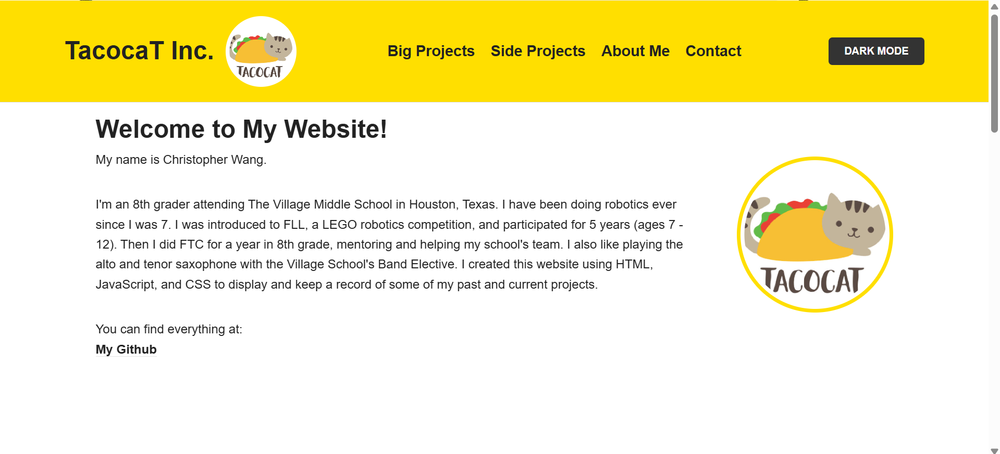

Portfolio Website

Quick Introduction
You're looking at it!
It's a personal portfolio website to showcase my projects and document most of them.
About
This website was created as part of my Computer Science class at the Village School. I came back to it almost a year later to modify it as a tool to document and display most of my projects.